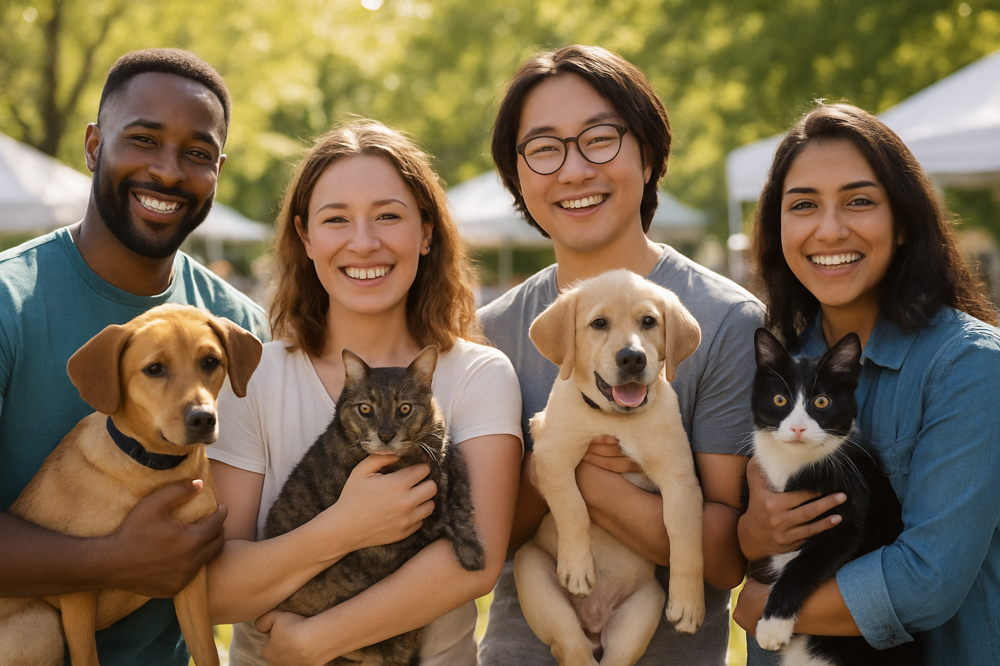

Encontre um novo amigo ou ajude a transformar vidas
Quero Adotar
Adotar um pet é um gesto de amor e responsabilidade. Nossos animais são vacinados, vermifugados e preparados para encontrar um novo lar. Você pode conhecer seus perfis, entender o processo e preencher um formulário de interesse.
Adote um PetQuero Doar um Pet
Está precisando doar um animal? Nós oferecemos orientação sobre como fazer isso com segurança, respeitando o bem-estar do pet. Entre em contato e nossa equipe irá avaliar e auxiliar da melhor forma possível.
Doe um Pet